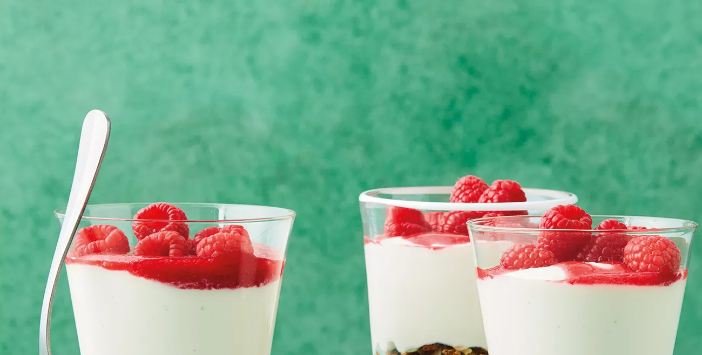

Beef With Red Curry

Best Wonton Noodle Soup

Enjoy this easy and nutritionally approved raspberry cheesecake recipe for a healthier dessert the whole family will love.
Read More
Raspberry Cheesecake Pots

Sticky Date Nice Cream

No-Cook Strawberry Bars